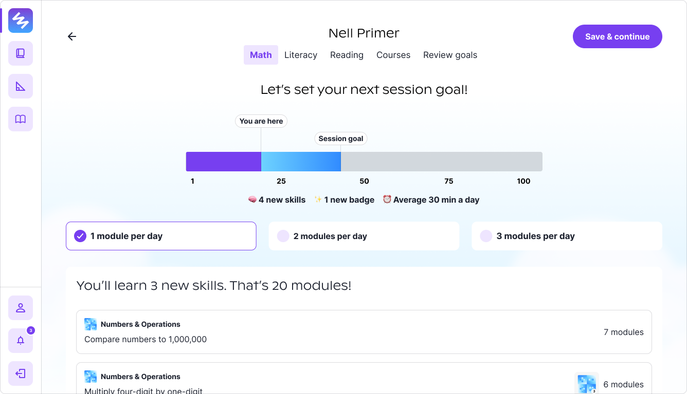

Primer, 2023
Primer’s bet is self-paced learning for all students. To accompany that objective, we created a goal setting experience for students to find their own motivation and vision for their academics.
Not available to the public. Contact for more information.
